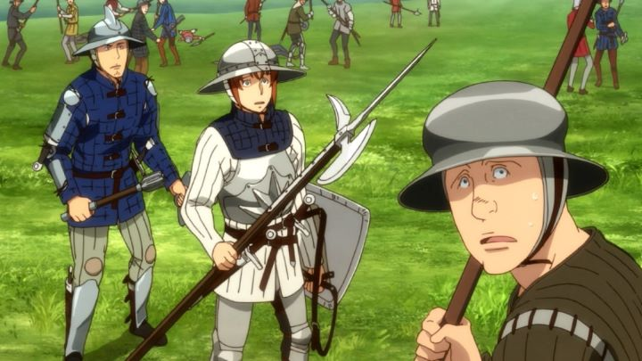

In 2015, there was an anime called "Maria the Virgin Witch." Immediately, you might have an inacurrate impression of what the show is. Any mention of sex, especially in anime, suggests raunchy comedy. On the contrary, "Maria the Virgin Witch" (the complete title including the French subtitle "Sorciere de gre, pucelle de force") is a smart, feminist piece of fantasy-historical fiction. It might still be controversal, but not for the reasons you might think.Set in medieval France, the country is at war with the Britons, in a war that has lasted many decades, with no end in sight. This is rendered with impressive realism, with soilders in detailed and unflattering armor, pantaloons and hosen, slippers, chapeaus, and so on, important in conveying what a daily battle might feel like. France and its villagers are devout to the Church, praying for medicine and safety for relatives in the army, but this only helps the soul, and not necessarily the suffering of reality. In the midst of this, there's one fantastical distinction: God is real, as are witches who live amongst the humans.The witches are small in number and live quietly, making a living through selling health potions or playing a part in the war behind the scenes. They ride brooms and have animal-familiars, matching the image we have (the most significant difference to old stories being that they appear younger, and age slowly). They seem to be an open secret, but most of them are discrete with their magic, knowing that Church labels such power as heresy. One such method to affect the war, to whomever pays, is to send succubus familiars out at night to pleasure male knights, making them too tired to fight the following day (at least one witch in the cast says she prefers to do the work herself: "why let them have all the fun?").But Maria is different. She has no desire for money, and is a dedicated pacifist, her heart breaking when she sees the battlefield, especially when she sees the fear of loved ones back in a nearby village for their return. She opening flies to each nearby battle, announcing herself, and summoning great dragons and serpants to scare off soldiers. After doing this several times, the Archangel Michael comes down from the Heavens to warn Maria to stop this, claiming it upsets the world's natural balance and is against God's will. She ignores the warning (admittedly, in a intense scene that no one could ignore), and Michael returns, decreeing thus: Maria must not publicly use her magic again, or else be struck down by the Heavens... AND she will loose her magic entirely when the day comes that she looses her virginity. Inconvenient, since a kind young man from the village just began expressing feelings towards her too. At first, there's a lot of humor to be had with Maria's lack of carnal experience. Maria has a succubus serving her, who berates her for not having even seen a naked man before. She has need to create a male-succubus soon after, but without reference, fails to give him a ding-dong, much to his frustration. The English dub, which works hard to utilize medieval phrases and a couple French words (sometimes incorrectly, but not easy to catch), has many great puns for characters to tease Maria for not having slept with a man. It's rare to see women being so open to sexuality in fiction, and the jokes make the series far more watchable (listening to Shakespeare-like speech for hours has limited appeal). But "Maria the Virgin Witch" is smarter and more dramatic. Maria only wishes for peace, but there are reprecutions for stopping each battle. It means coming home safely today, but also returning back to battle tomorrow. Maria doesn't take a side, so even if France seems likely to win a key battle, her actions spoil their plans. Even if they were set to lose, French mercenaries rely on both the fights and on stealing materials off dead corpses for their living: if there were suddenly no battles, much of the country would be out of work, resulting in poverty and tension. It's clear rape and pilliaging is common in this period, both when the opposite side wins, and when both sides are forced to stop fighting, even just temporarily. Fighting is just part of human nature, and cannot be stopped. And where is God's place in this? The story makes a controversal choice in trying to define God's reasoning: He acts according to His plan, to protect some form of balance in the universe, and is effectly mute to the cries and prayers of his most devout on Earth. And yet, when someone on Earth (Maria) is able to answer those prayers (even if only to those local to her), God sees it necessary to stop her, against against the prayers of the people. It's not entirely different from how faith is understood today (God ain't gonna answer my prayers for my favorite Football team to win), but explicitly suggests that God is devoid of love, in addition to suggesting that the Church's methods are entirely separate from His intentions. The Church itself is also an antagonist, from references to the incident of Joan of Arc, to machinations that risk Maria herself being burned at the stake. Painting Christianity in an antagonistic light isn't new for Japan (see almost any JRPG game, or shows like "Neon Genesis Evangelion" and its interpretation of "Angels"), and having any magic at all will immediately turn away to most dedicated of the faithful (I remember friends whose families didn't allow them to watch "Harry Potter"). Even so, I don't recall any anime that tackled God head-on like "Maria" does. The story risks going too far with its distrubing material (START SPOILER: one plot element involves Maria losing her virginity by force END SPOILER), but is able to backtrack itself to a happy fairy-tale ending. Frankly, I prefer it that way, as a relief after enough to witness. Somehow, "Maria the Virgin Witch" succeeds in a careful balance of comedy, romance, and drama, with adult themes of sex, religion, and war. The production values are fine, but only notable due to the grounded realism and detail of the human cast. Directoy Goro Taniguchi is best known for his work on "Code Geass," and very little of that can be seen here (animated by Production I.G.), aside from his continued story themes of what "peace" really means. I mentioned the English dub's script should be praised for its effort. However, it's important to note that Funimation's Bluray release in America ("Essentials" line) had one brief but strong example of compressed color banding in an early episode, and in episode 11 on the second disc, the audio has a bug that cuts out completely, only returning if you rewind or fast-forward past that single point (this was easily repeatable on a PS4). Both issues are irregular within this release, making me wonder how they got there in the first place. "Maria the Virgin Witch" is one of the more original shows I've seen. It's a challenging story that also remembers to be a piece of entertainment, and makes for a great adult fairy tale.
- "Ani" More reviews can be found at : https://2danicritic.github.io/ Previous review: review_Maquia_-_When_the_Promised_Flower_Blooms Next review: review_Marona's_Fantastic_Tale